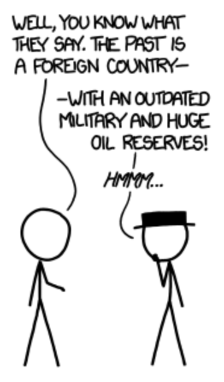

Nathan Young
Posts
Notes
Journal
Substack
RSS
The past is a foreign country
Note · updated
2024-05-02

{:height 404, :width 132}
Linked references · 1
Status
I do not endorse this chart. But it's funny how milquetoast this is by early 00s standards but how many red flags it has. Also that it is both lazily transphobic whilst also being complimentary of trans women.
The past is a foreign country